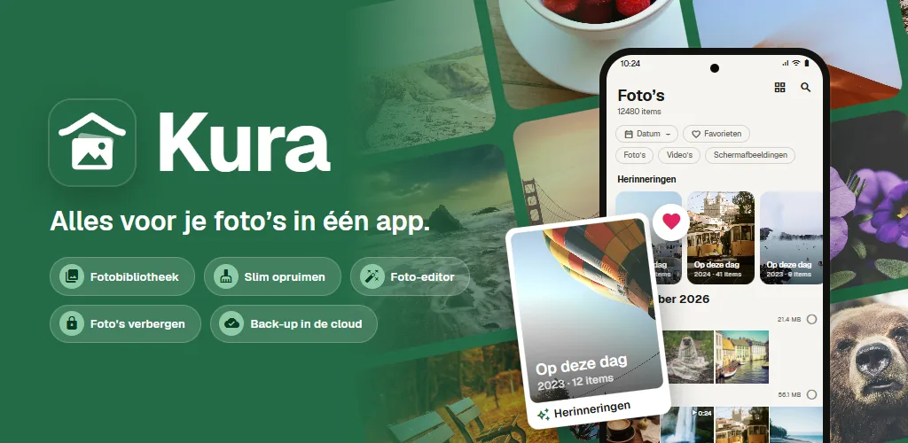
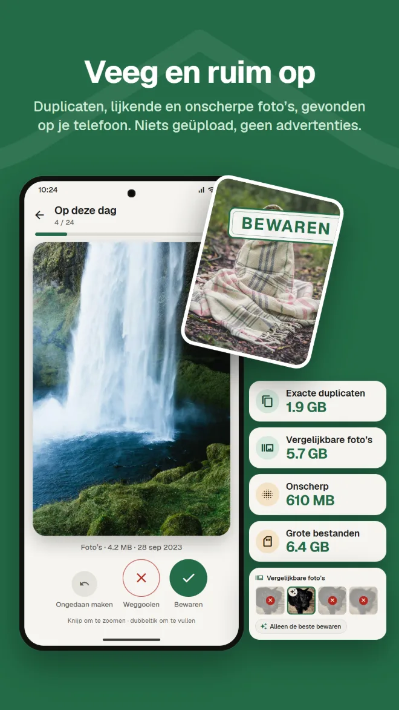
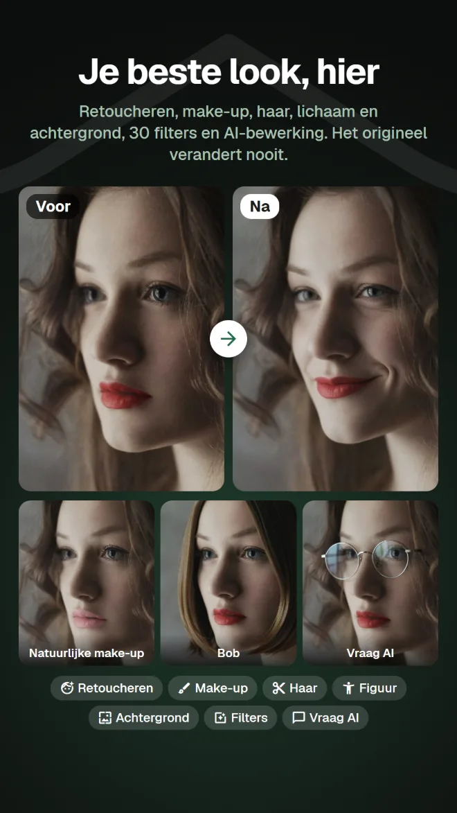
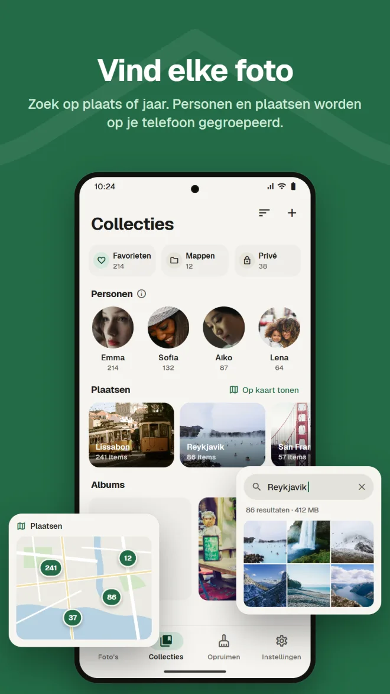
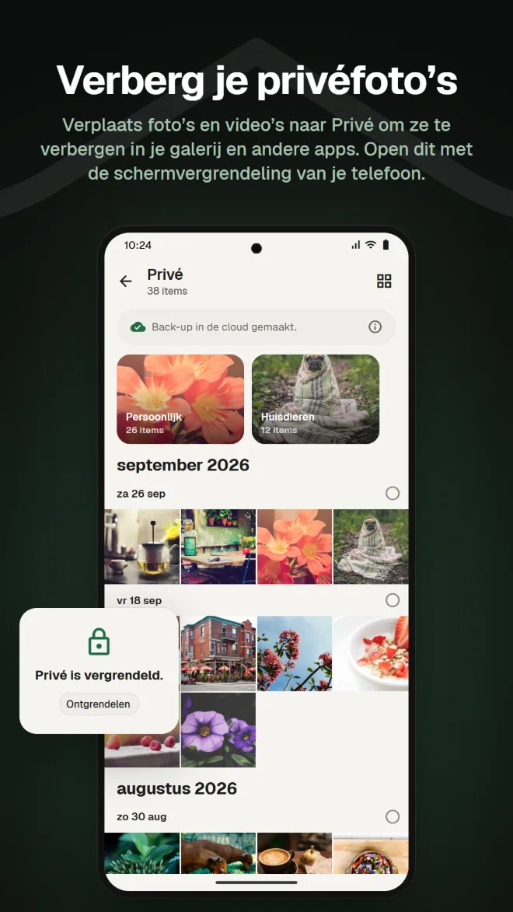
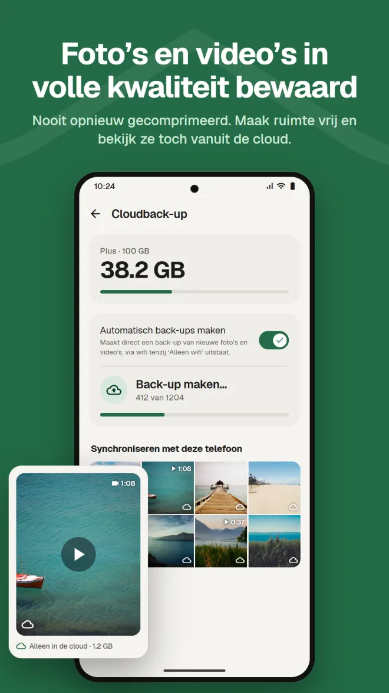
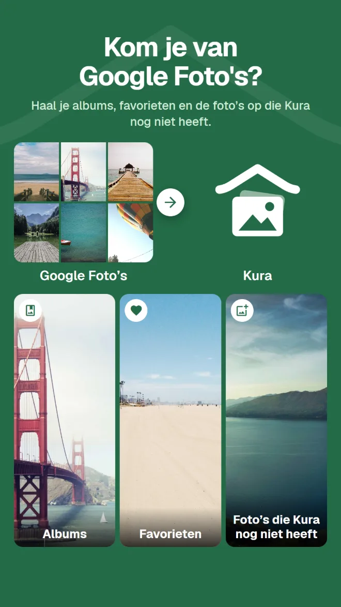

Zoeken op inhoud
Vind foto’s op plaats, op wat erop staat of op tekst in de foto.
Galerij, opruimen, bewerken met AI, privéruimte, back-up en overstappen van Google Foto’s. Met Kura heb je niet voor alles een andere app nodig.
Android 11 of hoger · Bekijken, sorteren en verwijderen zijn gratis · Inloggen met Google

Een galerij om ze te bekijken, een opruimer om ruimte vrij te maken, nog een app om te bewerken, nog een dienst voor back-ups. Bij elke wissel zoek je dezelfde foto opnieuw op.
Kura doet het allemaal in één bibliotheek.
Dezelfde foto’s bekijken, opruimen, bewerken en back-uppen, op dezelfde plek.
Van bibliotheek tot opruimen, bewerken, overstappen en back-up.
Kura vindt exacte duplicaten, vergelijkbare foto’s, onscherpe foto’s en grote bestanden op je telefoon. Veeg naar rechts om te bewaren, naar links om weg te gooien, en zie meteen hoeveel ruimte je kunt vrijmaken.

Retoucheren, vormen, make-up, haar en achtergrond, plus 30 filters, aanpassingen en bijsnijden. Met filters die eten lekker laten ogen en lichaamstools voor je hele figuur. Je bewaart altijd een kopie, dus het origineel blijft zoals het was.

Een raster op datum, met herinneringen van dezelfde dag in eerdere jaren. Zoek op plaats, op wat er op een foto staat of op tekst in een foto, en gezichten worden op je telefoon per persoon gegroepeerd.

Verplaats foto’s en video’s naar Privé om ze te verbergen in je galerij en andere apps. Open het met de schermvergrendeling van je telefoon.

Maak back-ups van foto’s en video’s zonder hercompressie. Verwijder kopieën met een back-up van je telefoon om ruimte vrij te maken; ze blijven vanuit de cloud zichtbaar.

Stuur gewoon je .zip van Google Takeout vanuit de app of de web-app. Kura haalt je albums, favorieten en de foto’s op die Kura nog niet heeft. De server van Kura pakt alles op de achtergrond uit, dus je kunt de app en de browser sluiten.

Foto’s in je Kura-cloud kun je in de web-app net als in de app bekijken, ordenen, opruimen, bewerken, delen en uploaden. Favorieten blijven gesynchroniseerd met de app.
Web-app openenInloggen met Google · In het Engels en Japans
Alles wat je verwacht van de galerij die je elke dag gebruikt.
Vind foto’s op plaats, op wat erop staat of op tekst in de foto.
Gezichten per persoon gegroepeerd op je telefoon, en je foto’s op een kaart.
Foto’s van dezelfde dag in eerdere jaren, bovenaan je bibliotheek.
Helderheid en kleur aanpassen, bijsnijden en penseel, plus filters voor eten.
Voeg een vervaldatum en wachtwoord toe, en stuur naar mensen zonder de app.
Bevestig elke keer bij het openen met je schermvergrendeling. Je kunt Privé ook verbergen.
Installeer de app en je foto’s verschijnen, al geordend.
Download via Google Play (Android 11 of hoger)
Kies ‘Alles toestaan’ om je hele bibliotheek te laden
Log in met je Google-account
Meteen ordenen; voeg back-up toe wanneer je die nodig hebt
Geen advertenties. Je betaalt alleen als je de cloud gebruikt.
Alles op je telefoon
Maandelijks betaald via Google Play. Altijd opzegbaar
Google Play toont prijzen in je lokale valuta.
Foto’s verlaten je telefoon alleen als je iets doet waarmee je ze duidelijk ergens naartoe stuurt.
Duplicaten, onscherpte, gezichten, objecten en tekst worden op je telefoon herkend. Er worden geen foto’s geüpload om ze te ordenen.
Android vraagt om bevestiging voordat er een bestand wordt verwijderd, en weggegooide foto’s blijven in de prullenbak totdat je die leegt.
Als je inlogt, bewaart onze server alleen de ID van je Google-account. Je naam en e-mailadres worden nooit verstuurd.
Bij AI-bewerking wordt alleen het gebied rond het gezicht verstuurd, en noch de foto noch het resultaat wordt op de server bewaard.
Geen advertenties · Bekijken, sorteren en verwijderen zijn gratis